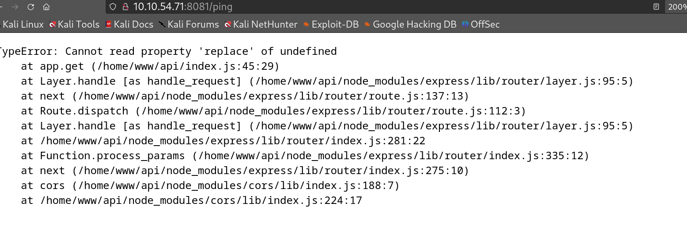
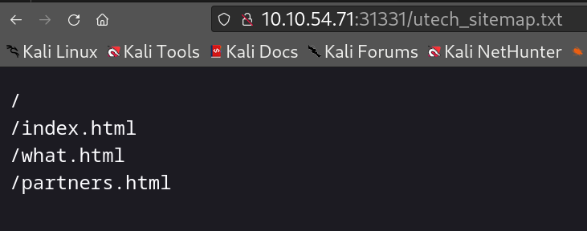
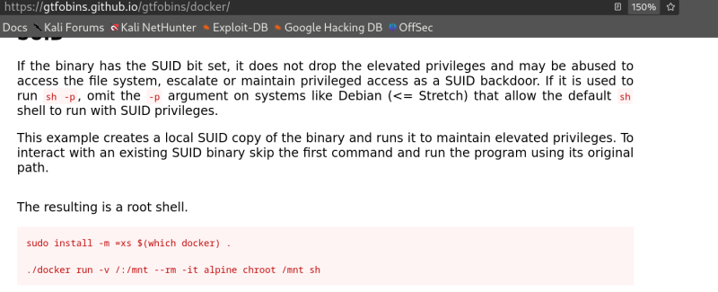

Ultratech
I like to scan all ports to check which are open. nmap <ip> -p- --open
I then perform a more specific and thorough scan, nmap <ip> -p 21, 22, 8081, 31331 -A

This site seems to be using an API. It seems the Node JS express framework is making a call to port 31331
Note the /ping provides a 500 respoonse showing a server error

Scanning the other port on 31331, shows some results
potential step on the jpeg

Potential users, I tried to brute force the web form using ffuf.
I will create a user list and brute this login page.
That did not work so I checked the hint, which told me to look closely at the /ping route on port 8081. I could see there was an ip parameter which connects to the box.
Found RCE, took a while and multiple trys using the various commands above.
Chained commands to dump the db data containing 2 MD5 hashes.
Cracked the hashes, crackstation.net is cool!
SSH access gained to r00t not root.
This was definately the time for Linpeas.
This red and yellow! Loving it.
Did my research on docker breakouts and privesc.

There was a change necessary alpine to bash